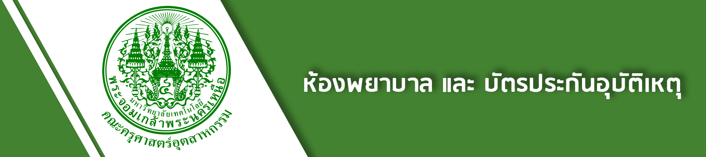
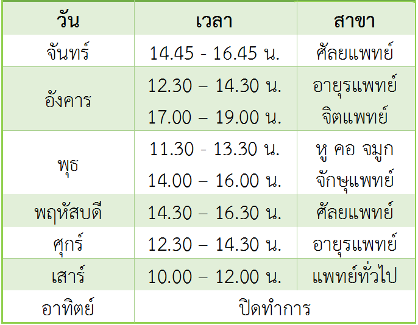
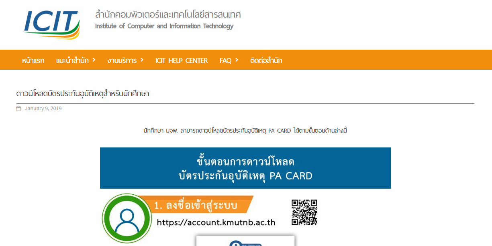
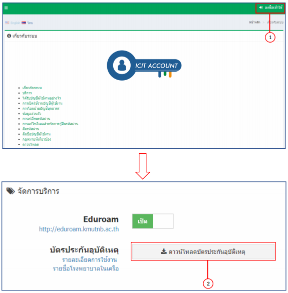

<!--
  Generated template for the AccidentPage page.

  See http://ionicframework.com/docs/components/#navigation for more info on
  Ionic pages and navigation.
-->
<ion-header>

  

</ion-header>


<ion-content padding>
  <ion-card>
    <ion-card>
      <ion-card-header style="background-color:#42c431;">
        <h2 text-center><b>First Aid Room</b></h2>
      </ion-card-header>
      <ion-card>
        
      </ion-card>
      <ion-card-content>
        <h3 text-center><b>ตารางแพทย์</b></h3>
        
        <a href="https://www.facebook.com/HCkmutnb/">Facebook</a><br>
        <a href="http://healthcenter.kmutnb.in.th/" target="_system">Website</a><br>
      </ion-card-content>
    </ion-card><br>
    <ion-card>
      <ion-card-header style="background-color:#42c431;">
        <h2 text-center><b>Accident Insurance</b></h2>
      </ion-card-header>
      <ion-card>
        
      </ion-card>
      <ion-card-content>
          <h3 text-center><b>วิธีรับบัตรประกันอุบัติเหตุ</b></h3>
          
        <a href="https://account.kmutnb.ac.th/web/" target="_system">บัตรประกันอุบัติเหตุ</a><br>
        <a href="http://healthcenter.kmutnb.in.th/Insurance.aspx" target="_system">ข้อมูลที่ควรรู้เกี่ยวกับประกัน</a><br>
      </ion-card-content>
    </ion-card>
  </ion-card>
</ion-content>